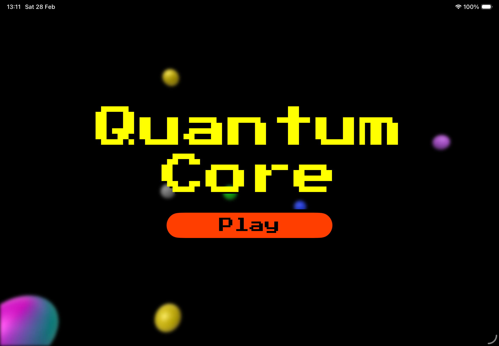
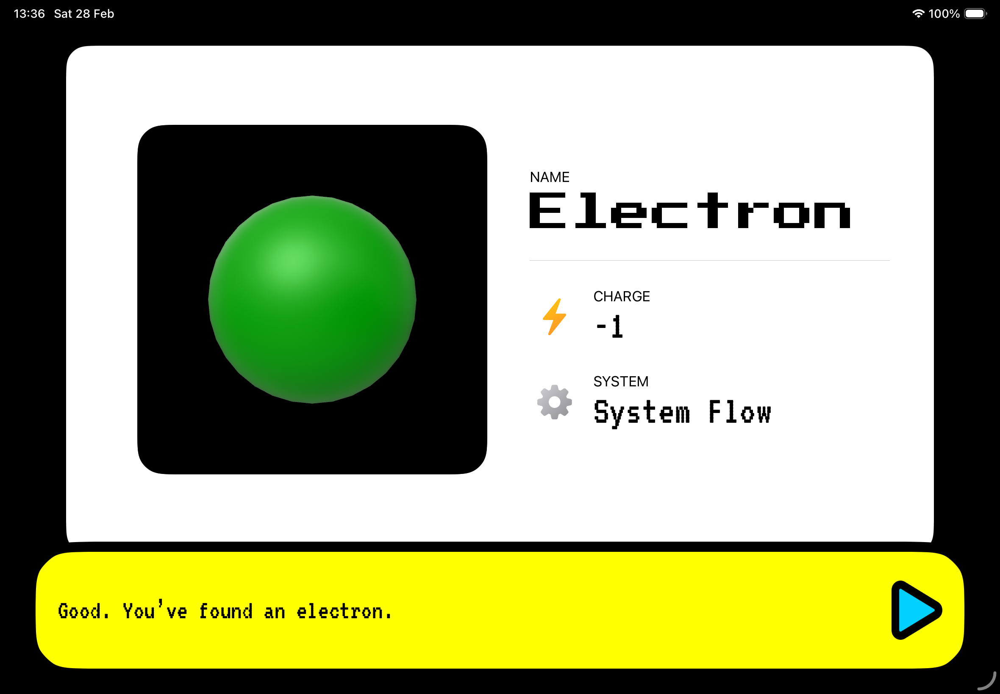
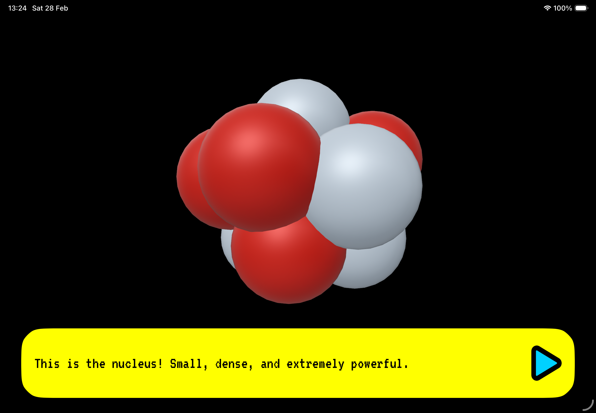

Quantum Core is an interactive experience where you explore an atom from the inside to bring an offline intelligence — Max — back online. Every particle you discover restores a piece of the system: the electron, the photon, the quarks, the gluon, the W and Z bosons. Along the way, you learn the real structure of matter, one honest, well-explained beat at a time.
Inside the experience



Platforms
iOS · iPadOS · visionOS
Particles
Electron · Photon · Quarks · Gluon · W Boson · Z Boson
Built for
Swift Student Challenge